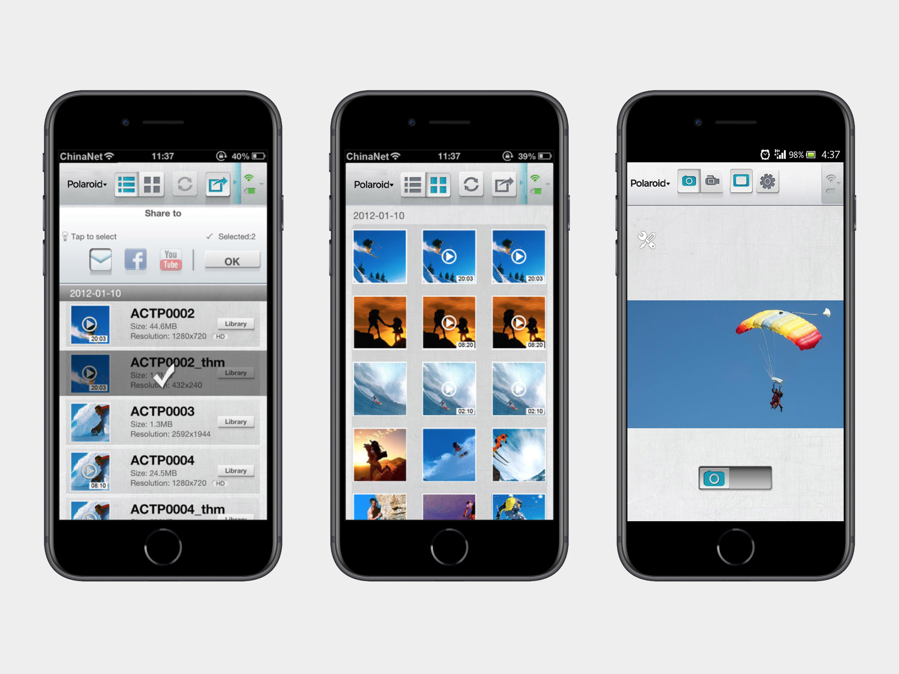

Project scope
- Design app and software features
- Prototypes, wireframe

Project scope
The Polaroid XS100i Wi-Fi HD 1080p 16MP Waterproof Sports Action Video Camera is wifi enabled, which allows the user to adjust the camera settings, remote control, and sharing during the shooting.

After comparing the Polaroid Action Camera with other similar devices and user scenarios, I added a “delay” button to live streaming photos to improve the experience for users taking selfies.
Challenges Longer wait times and timeouts for users when accessing detailed information due to limitations of wifi components. Result Launched in 2013With 20+ years in multimedia and UX design, including 10 in IoT, I create innovative, user-centric solutions. I've collaborated on diverse projects, tailoring designs to user needs. My background in counseling and integrated art enhances my understanding of user psychology and aesthetics, ensuring intuitive experiences. Specialties: Product Design, User Experience design, User Interface Design, Information Architectures, Visual Psychological
My background